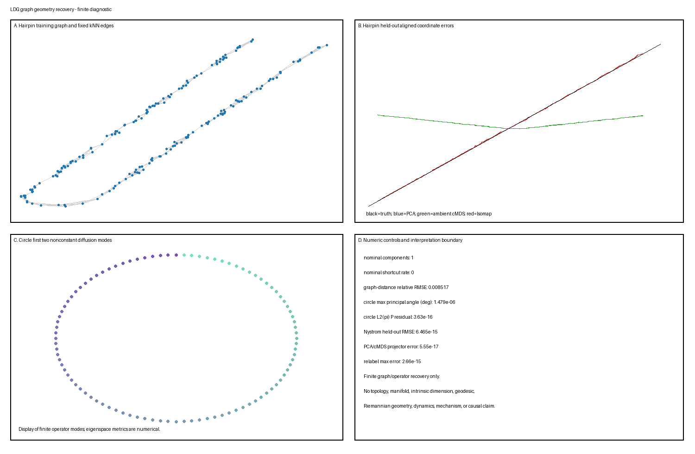

不宣称流形的图几何恢复
不宣称流形的图几何恢复
这个 L1/stable Candidate B 玩具模型分离有限图构造、最短路径距离、经典多维标度（MDS）、亲和算子特征空间、扩散距离截断与留出扩展。它使用两个具有已知评分目标的模拟器：解析弧长的单位速度发卡，以及均匀高斯亲和为循环矩阵的干净采样圆。数值是主种子 20260820 下的确定性输出；修正生成产物包含 197 个有限、唯一键度量。
假定背景： 欧氏距离、连通加权图、全对最短路径、对称特征分解、经典 MDS、可逆马尔可夫算子、主角度与防泄漏训练/测试评估。
问题
对象询问两个有界问题。
- 发卡： 当观测描出已知折叠区间时，固定 \(k\) 最近邻 Isomap 图是否近似解析弧长距离，并支持 PCA 与外围距离 MDS 之外的有用一维留出扩展？连接器间隙、非均匀采样、减小支分离、错误 \(k\) 与各向异性特征缩放如何破坏该结果？
- 圆： 对有限干净均匀圆样本，声明 \(\alpha=1\) 扩散映射算子是否恢复已知第一非恒定二维傅里叶特征空间，只保留两个模态损失多少扩散距离，归一化 Nyström 扩展多准确地恢复留出中点角度？非均匀密度与极端带宽如何改变那些有限算子结果？
目标是声明模拟器距离与有限图/算子量。图成功不是拓扑、流形结构、本征维数、测地线或黎曼几何、唯一坐标、动力学、机制或因果性的证明。
真值
单位速度垂直发卡
设
\[ r=0.175, \qquad L=6+\pi r=6.549778714378213. \]
两条直支长度为 \(3\)，分离 \(2r=0.35\)。对真实弧长参数 \(\ell\in[0,L]\)，定义
\[ c_r(\ell)= \begin{cases} (0,\ell), & 0\leq\ell\leq3,\\[3pt] \left(r+r\cos\theta,\ 3+r\sin\theta\right), &3<\ell\leq3+\pi r,\\[3pt] (2r,3-v), &3+\pi r<\ell\leq L, \end{cases} \]
其中
\[ \theta=\pi-\frac{\ell-3}{r}, \qquad v=\ell-(3+\pi r). \]
连接连续且 \(\lVert c_r'(\ell)\rVert_2=1\) 在三个光滑内部。因此模拟器路径距离精确为
\[ d_\ell(i,j)=|\ell_i-\ell_j|. \]
固定 QR 推导等距把平面嵌入 \(\mathbb R^3\)。NumPy QR 应用于
\[ A= \begin{pmatrix} 1.0&0.3\\ -0.2&0.9\\ 0.45&-0.35 \end{pmatrix}, \]
保留两列是
\[ Q= \begin{pmatrix} -0.8971226080&-0.3267089443\\ 0.1794245216&-0.8845629735\\ -0.4037051736& 0.3328807769 \end{pmatrix}, \qquad Q^\top Q=I_2. \]
带固定偏移 \(o=(0.4,-0.7,0.2)^\top\)，
\[ x^0(\ell)=Qc_r(\ell)+o, \qquad x(\ell)=x^0(\ell)+\epsilon, \qquad \epsilon\sim\mathcal N(0,0.01^2I_3). \]
实现只为评分与神谕保留 \(\ell\)。图拟合、PCA、MDS 与原始扩展只接收带噪观测。
圆与声明有限算子目标
圆使用 96 个干净、均匀间隔训练角度与 96 个留出中点角度：
\[ \theta_j=\frac{2\pi j}{96}, \qquad \theta_j^*=\frac{2\pi(j+1/2)}{96}, \qquad j=0,\ldots,95. \]
平面点 \((\cos\theta,\sin\theta)\) 使用相同 \(Q\) 等距嵌入 \(\mathbb R^3\)，无发卡偏移。对训练点，高斯亲和是
\[ W_{ij}=\exp\left(-\frac{\lVert y_i-y_j\rVert_2^2}{\varepsilon}\right). \]
均匀圆间距使干净距离与亲和矩阵循环。因此
\[ \mathcal F_1 =\operatorname{span}\{(\cos\theta_j)_j,(\sin\theta_j)_j\} \]
是声明第一非恒定有限算子特征空间。实现检查循环结构、特征值排序、子空间角度与算子残差，而非硬编码恢复。这是有限矩阵神谕，不是拓扑推断结果。
生成模型
发卡划分
对名义发卡数据，在每个划分内独立抽取并排序
\[ \ell_i\sim\operatorname{Uniform}[0,L] \]
划分大小是：
| 划分 | 行 | 用途 |
|---|---|---|
| 训练 | 180 | 图、PCA、MDS 与评分对齐拟合 |
| 验证 | 80 | 固定规则扩展评估 |
| 测试 | 80 | 最终固定规则扩展评估 |
单独 Generator(PCG64(SeedSequence(words))) 流生成训练、验证、测试、对照与观测噪声抽样。排序只是存储约定；没有方法接收行顺序作为路径边。
圆样本
名义训练与中点网格确定性。非均匀圆对照抽取 96 个确定性种子值、排序并应用
\[ \theta=2\pi u^{2.4}, \qquad u\sim\operatorname{Uniform}[0,1]. \]
没有圆验证网格，没有圆度量重标条件。
生成、特征变换、图/亲和构造、谱拟合、扩展、评分对齐、产物写入与验证是独立函数。测试真值永不入图、算子、嵌入或原始扩展。
参数
发卡图
- 相异度：所提供 \(\mathbb R^3\) 特征中的欧氏距离；
- 名义图：\(k=6\) 的无向并 \(k\)NN 图；
- 邻居候选：在稳定 mergesort 前把距离对角设为 \(+\infty\)，然后保留前 \(k\) 个索引；
- 精确距离并列：稳定排序先保留较低行索引；
- 有向候选通过其并对称化，每个保留边赋予其精确外围距离；
- 边权：外围欧氏距离；
- 最短路径：确定性向量化 Floyd–Warshall；
- 嵌入维数：一；
- 不连通对：在诊断中保留 \(+\infty\)，不传给经典 MDS；
- 长弧分离边满足 \[ |\ell_i-\ell_j|>0.70; \]
- 实质路径捷径满足 \[ |\ell_i-\ell_j|-w_{ij}>0.50, \] 其中 \(w_{ij}\) 是保留外围边权；以及
- 两个比率都以唯一无向非对角图边数作为分母。
两个边标签只在图构造后使用模拟器真值。长弧标签记录分离而不断言低估；shortcut（捷径）一词保留给实质路径低估准则。没有 \(k\) 从 \(\ell\)、验证或测试结果选择。
经典 MDS 与扩展
对有限距离矩阵 \(D\)，
\[ J=I-\frac1n\mathbf1\mathbf1^\top, \qquad B=-\frac12JD^{\circ2}J. \]
对领先特征对 \((\lambda_1,v_1)\)，一维坐标是
\[ z=\sqrt{\max(\lambda_1,0)}v_1. \]
实现报告两个直接数值诊断：
\[ \text{negative eigenmass}=\sum_{\lambda_j<0}|\lambda_j| \]
与
\[ \text{strain} =\sqrt{\operatorname{mean}\left(B-zz^\top\right)^2}. \]
这些不是归一化比例。
对具有到训练点平方距离 \(\delta_*^2\) 的留出点，实现 Gower 扩展形成
\[ b_* =-\frac12\left[ \delta_*^2 -\operatorname{mean}(\delta_*^2)\mathbf1 -\operatorname{rowmean}(D^{\circ2}) +\operatorname{mean}(D^{\circ2})\mathbf1 \right] \]
并返回
\[ z_*=\frac{b_*^\top v_1}{\sqrt{\max(\lambda_1,10^{-15})}}. \]
外围 MDS 使用 \(\delta_{*j}=\lVert x_*-x_j\rVert_2\)。Isomap 把新点连接到其六个最近训练顶点而不改变训练图，然后使用
\[ \delta_{*j} =\min_{i\in N_6(x_*)} \left(\lVert x_*-x_i\rVert_2+d_G(i,j)\right). \]
发卡评分对齐
对 PCA、外围 MDS 与 Isomap 各自，在训练坐标与训练 \(\ell\) 上最小二乘拟合
\[ \ell_i=az_i+b \]
冻结 \((a,b)\) 并原样应用于验证与测试原始坐标。仿射映射只为评分处理符号、原点与尺度；它不是仅观测拟合的一部分，不辨识唯一潜坐标。
扩散映射
固定名义参数是
\[ \varepsilon=0.18, \qquad \alpha=1, \qquad t=1, \qquad m=2. \]
保留自亲和。定义
\[ q_i=\sum_jW_{ij}, \qquad K_{ij}=\frac{W_{ij}}{q_iq_j}, \qquad d_i=\sum_jK_{ij}, \]
\[ P=D^{-1}K, \qquad \pi_i=\frac{d_i}{\sum_rd_r}, \qquad S=D^{-1/2}KD^{-1/2}. \]
对角化实对称 \(S\)，带欧氏标准正交特征向量 \(\phi_l\)。实现把它们变换为右特征函数
\[ \psi_l =\sqrt{\sum_i d_i}\,D^{-1/2}\phi_l, \]
因此
\[ \psi_l^\top\Pi\psi_m=\delta_{lm}. \]
双模态坐标排除平凡常值模态：
\[ \Phi_{1,2}(y_i) =\left(\lambda_1\psi_1(i),\lambda_2\psi_2(i)\right). \]
完整有限算子扩散距离使用所有非恒定模态，
\[ D_1(i,j)^2 =\sum_{l=1}^{95}\lambda_l^2 \left(\psi_l(i)-\psi_l(j)\right)^2, \]
并从 \(P\) 的行独立重算为
\[ D_1(i,j)^2 =\sum_k\frac{(P_{ik}-P_{jk})^2}{\pi_k}. \]
扩散时间是一个图算子步，不是物理时间或已发现动力学 (Coifman 和 Lafon 2006年)。
归一化 Nyström 扩展与圆对齐
对留出 \(y_*\)，计算训练亲和与
\[ q_*=\sum_jw_{*j}, \qquad k_{*j}=\frac{w_{*j}}{q_*q_j}, \qquad p_{*j}=\frac{k_{*j}}{\sum_rk_{*r}}. \]
对非零模态，
\[ \psi_l(y_*) =\frac1{\lambda_l}\sum_jp_{*j}\psi_l(j). \]
两个保留坐标通过一个无约束最小二乘 \(2\times2\) 映射线性对齐到训练行 \((\cos\theta_i,\sin\theta_i)\)。同一映射评分所有中点扩展。实现中没有第二次 Procrustes、径向、角度或验证对齐。谱样本外扩展是额外算法，不必等于直推式完整重拟合 (Bengio 等 2003年)。
模拟
名义发卡
在带噪训练观测上拟合训练均值、秩一 PCA、外围距离 MDS 与 \(k=6\) Isomap。不重建图地扩展验证与测试观测。
发卡对照
实现对照精确且预先声明：
- 稀疏连接器间隙： 拒绝采样区间 \[ [3-0.18,\ 3+\pi r+0.18]. \] 之外的 180 个训练 \(\ell\) 值。
- 减小支分离： 设置 \[ r_r=0.06, \qquad L_r=6+\pi r_r=6.188495559215387, \] 并通过 \[ \ell_r=\frac{\ell_{\mathrm{nominal}}}{L}\,L_r. \] 保留名义训练分位数。在 \([0,L_r]\) 上评估相同分段公式 \(c_{r_r}\) 并使用 \(k=6\)。这保留两条长度为 3 的直支与端点 \(c_{r_r}(L_r)=(0.12,0)\)。
- 非均匀采样： 抽取 \(u\sim U[0,1]\) 并变换 \[ \ell= \begin{cases} L\,0.55(u/0.65)^2,&u<0.65,\\ L\left[0.55+0.45((u-0.65)/0.35)^{0.55}\right],&u\geq0.65. \end{cases} \]
- 断开小邻域： 并 \(k=1\) 的名义观测。
- 错误更大邻域： 并 \(k=18\) 的名义观测。
- 近完整图： \(k=n_{\mathrm{train}}-2=178\) 的名义观测。
- 各向异性特征缩放： 在距离与图构造前把名义观测行右乘 \[ \operatorname{diag}(1,1,3) \] 然后保持 \(k=6\)。这改变特征几何与邻居身份；它不是无害全局标量。
圆条件
- 均匀名义： 96 个干净训练角度，\(\varepsilon=0.18\)。
- 非均匀密度： 种子排序 \(2\pi u^{2.4}\) 角度，\(\varepsilon=0.18\)。
- 带宽太小： 均匀角度，\(\varepsilon=0.005\)。
- 带宽太大： 均匀角度，\(\varepsilon=5.0\)。
失败被报告而非调走。没有圆度量重标条件。
可视化
单一生成 summary.png 精确四个面板：
- 名义带噪发卡训练点与固定 \(k=6\) 图边；
- 名义测试真实 \(\ell\) 对训练对齐 PCA、外围 MDS 与 Isomap 坐标；
- 名义圆的前两个非恒定扩散特征函数；以及
- 所选数值对照加解读边界。

图不绘制稀疏间隙、减小分离、非均匀或带宽对照。它仅具诊断性；真值排序与对齐是评分/显示辅助，而非拟合输入。
预期行为
- 发卡单位速度且固定 \(Q\) 等距，因此无噪路径距离精确为 \(|\Delta\ell|\)。
- PCA 与外围距离经典 MDS 对欧氏距离应恢复等价训练一维样本坐标子空间。这是实现神谕，不是路径距离结果。
- 无跨支边的连通局部图可以比外围弦更好地近似解析弧长。Isomap 分离图构造、最短路径与 MDS (Tenenbaum 等 2000年)。
- 稀疏间隙或 \(k=1\) 可以使图断开。减小分离、\(k=18\) 或 \(k=178\) 可以制造实质路径捷径。图近似依赖采样、分离、曲率与路径条件 (Bernstein 等 2000年)。
- 在干净均匀圆上，循环亲和使余弦/正弦张成空间成为精确有限算子目标，至浮点与基旋转。
- 即使特征空间被精确恢复，两个模态也不必复现完整有限算子扩散距离。
- 非均匀密度与极端带宽改变度、谱、扩散尺度、截断与有限样本特征空间。\(\alpha=1\) 连续统解读仍依赖假设，而非有限保证 (Coifman 和 Lafon 2006年)。
经验结果（包括相反行为）被保留而不调参。
参数操控
| 条件 | 实现改变 | 主诊断 |
|---|---|---|
hairpin/nominal |
\(r=0.175\)，\(k=6\) | 弧长与留出坐标 RMSE |
sparse_connector_gap |
排除声明连接器区间 | 分量与无限对 |
reduced_branch_separation |
\(r=0.06\)，\(L_r=6+\pi r\)，重用名义分位数 | 长弧分离边与实质路径捷径 |
nonuniform_sampling |
\(u\) 的固定分段变换 | 间隙/分量/距离误差 |
disconnected_small_k |
\(k=1\) | 断开分量 |
wrong_k |
\(k=18\) | 实质路径捷径与距离畸变 |
nearly_complete_large_k |
\(k=178\) | 外围弦塌缩 |
anisotropic_feature_scaling_z3 |
特征变换 \(\operatorname{diag}(1,1,3)\) | 邻居变化与度量依赖 |
circle/uniform |
\(\varepsilon=0.18\) | 傅里叶特征空间与中点扩展 |
nonuniform_density |
\(\theta=2\pi u^{2.4}\) | 密度敏感有限算子 |
epsilon_too_small |
\(\varepsilon=0.005\) | 近局部化谱与截断 |
epsilon_too_large |
\(\varepsilon=5.0\) | 近均匀亲和与谱塌缩 |
没有条件是对 \(k\) 或 \(\varepsilon\) 的验证搜索。
健全性检查
可执行验证器只断言以下实现神谕：
- 发卡连接连续性、有限差分单位速度、总长度与声明容差内 \(Q^\top Q=I\)；
- 图邻接对称性、最短路径对称性与零对角、名义连通图的有限距离、断开对照的显式无限距离，以及 500 个确定性采样三元组上的三角不等式；
- 合成精确并列/重复 \(k\)NN 情形，点 \((0,0),(0,0),(1,0),(-1,0)\)，验证没有行选择自身、稳定并列偏好较低索引、并对称化精确、保留边权精确等于原始距离；
- 减小分离生成器具有 \(L_r=6+\pi(0.06)\)、两条长度 3 支、端点 \((0.12,0)\)、零定义域违反，并在数值精度内重用名义分位数；
- PCA/外围 MDS 样本投影器等价与仿射坐标一致；
- 外围 MDS 与 Isomap 训练点 Gower 扩展重放；
- 均匀圆亲和与马尔可夫循环差异；
- 马尔可夫行和、平稳性 \(\pi^\top P=\pi^\top\)、细致平衡、\(L^2(\pi)\) 特征函数 Gram 矩阵与直接行对谱扩散距离；
- 均匀圆训练点 Nyström 重放；
- 发卡图距离与圆双模态投影器在确定性重标签下不变；
- 发卡划分/对照与圆网格的精确再生；
- 发卡真值投毒使拟合与原始扩展不变；
- 圆角度真值投毒改变真值，同时保持观测训练与中点点、拟合与原始 Nyström 扩展不变；
- 测试观测投毒使发卡训练拟合不变；
- 各向异性缩放改变至少一个无向邻居边；
- 图诊断/度量记录（包括两个边语义）与 \(L^2(\pi)\) 圆角度/残差记录在 CSV 与 JSON 间精确一致；
- 精确 CSV schema、有限值、非空标签、唯一键、产物哈希与逐字节相同临时再生。
这些检查只确立有界数值与泄漏性质。
失效情形
- 好图隐藏实质捷径： 外围权低估模拟器路径分离超过 0.50 的边可以在许多图距离上损坏，而一维显示保持视觉有序。
- 把长分离与捷径混淆： \(|\Delta\ell|>0.70\) 被单独报告，但其本身不证明实质路径低估。
- 插补断开距离： 用任意有限值替换 \(+\infty\) 会发明几何；本实现对断开对照省略 MDS。
- 隐藏负特征结构： 原始负特征质量与应变被报告，而非静默地把每个距离矩阵称为欧氏。
- 用训练真值选邻居： \(\ell\) 与角度值只是评分与神谕输入。
- 把直推式重拟合称为扩展： 留出点不被插入训练图或算子。
- 字面比较未对齐轴： 训练拟合仿射/线性映射只在评分时处理坐标约定。
- 把双模态坐标称为完整扩散几何： 截断误差对照所有有限非恒定模态显式测量。
- 把密度归一化当作有限保证： \(\alpha=1\) 不证明非均匀有限样本中的无密度几何。
- 把圆特征空间称为拓扑恢复： 结果来自生成循环矩阵，而非拓扑估计器。
- 把扩散时间称为物理时间： \(t=1\) 是一个马尔可夫算子步。
- 忽略特征重标： 各向异性缩放在该实现中改变 85 条无向邻居边。
恢复任务
发卡基线与 Isomap
均值基线只为评分预测 \(\ell\) 的训练均值。PCA 中心化训练观测并投影到领先右奇异向量。外围 MDS 直接对训练欧氏距离应用经典 MDS。Isomap 构造并 \(k\) 图、计算全对最短路径，并只在连通时应用相同 MDS 例程。留出点使用上述固定 Gower 规则。
圆扩散映射
圆分析构造带自环的稠密高斯亲和、应用 \(\alpha=1\) 归一化、对角化对称共轭、在 \(L^2(\pi)\) 中归一化右特征函数，并保留前两个非恒定模态。它计算完整与截断扩散距离，并使用固定归一化 Nyström 扩展而不重拟合。
候选分析方法
发卡
- 训练均值评分参考；
- 秩一 PCA；
- 一维外围距离经典 MDS；
- 并 \(k\) Isomap 加一维经典 MDS；以及
- 无嵌入的直接图诊断。
圆
- 原始高斯亲和与归一化马尔可夫诊断；
- 完整 \(\alpha=1\) 有限算子扩散距离；
- \(t=1\) 处前二非恒定模态扩散映射；
- 归一化 Nyström 中点扩展；以及
- 直接傅里叶子空间/算子诊断。
没有方法用真值选择 \(k\)、\(\varepsilon\)、保留模态、图边或扩展参数。
评估
每个 metrics.csv 行精确具有：
domain,condition,split,method,target,metric,value最终产物包含 197 个有限、非空、唯一键行。无限图距离由有限对数表示，而非非有限 CSV 值。
实现发卡度量
对有限无序训练对，图距离相对 RMSE 是
\[ \frac{\sqrt{\operatorname{mean}(d_G-d_\ell)^2}} {\sqrt{\operatorname{mean}d_\ell^2}}, \]
并伴随报告 Pearson 相关。每个图条件还报告边数；长弧分离边数/率/阈值/分母；实质路径捷径数/率/低估阈值/分母；分量数；与有限/无限对数。连通 Isomap 条件还报告原始 MDS 负特征质量与应变。各向异性条件报告无向邻居边对称差数与率。减小分离与精确并列生成器/神谕量也作为度量发出。
名义均值、PCA、外围 MDS 与 Isomap 只报告训练/验证/测试仿射对齐坐标 RMSE。不发出端点/内部、MAE、坐标相关、度分位数或额外压力度量。
实现圆度量
均匀条件报告两个 \(L^2(\pi)\) 主角度、加权 \(P\) 不变子空间残差、双模态截断相对 RMSE、直接对谱最大差异、中点 Nyström RMSE、领先八个特征值与五个马尔可夫/算子神谕差异。每个圆对照报告相同加权残差、截断相对 RMSE、全谱逐对距离 RMS、四个领先特征值与两个加权主角度。不发出径向/角度扩展度量或圆验证度量。
声明 \(L^2(\pi)\) 主角度在 \(\sqrt\Pi\Psi_{1:2}\) 与 \(\sqrt\Pi C\) 之间计算，其中 \(C=(\cos\theta,\sin\theta)\)。实现不变子空间残差使用 \(P\) 且为
\[ \min_A\frac{\lVert PC-CA\rVert_{F,\pi}}{\lVert C\rVert_{F,\pi}}, \qquad \lVert M\rVert_{F,\pi}=\lVert\sqrt\Pi M\rVert_F. \]
经验结果
名义发卡结果是：
| 结果 | 值 |
|---|---|
| 分量 | 1 |
| 无向边 | 622 |
| 长弧分离边 / 分母 | 0 / 622 |
| 实质路径捷径 / 分母 | 0 / 622 |
| 图距离相对 RMSE | 0.00851665 |
| 图距离相关 | 0.99989924 |
| Isomap 训练 / 验证 / 测试 RMSE | 0.0148988 / 0.0153847 / 0.0176344 |
| PCA 测试 RMSE | 1.63981 |
| 外围 MDS 测试 RMSE | 1.63981 |
| 均值测试 RMSE | 1.64913 |
| PCA/外围 MDS 投影器差异 | \(5.55\times10^{-17}\) |
| 外围 MDS / Isomap 重放差异 | \(2.44\times10^{-15}\) / \(4.88\times10^{-15}\) |
| 外围 MDS 负特征质量 / 应变 | \(4.92\times10^{-13}\) / 0.0295864 |
| Isomap 负特征质量 / 应变 | 0.290124 / 0.00258654 |
发卡对照结果是：
| 条件 | 分量 | 无限对 | 长边 / 分母 | 实质捷径 / 分母 | 相对 RMSE | 相关 |
|---|---|---|---|---|---|---|
| 稀疏连接器间隙 | 2 | 8,064 | 0 / 632 | 0 / 632 | 有限对内 0.01613 | 0.99977 |
| 减小分离，\(r=0.06\) | 1 | 0 | 80 / 626 (0.12780) | 81 / 626 (0.12939) | 0.67882 | 0.30233 |
| 非均匀采样 | 2 | 1,859 | 1 / 630 (0.00159) | 1 / 630 (0.00159) | 0.28507 | 0.96685 |
| \(k=1\) | 57 | 15,883 | 0 / 123 | 0 / 123 | 有限对内 0.34740 | 0.90867 |
| \(k=18\) | 1 | 0 | 148 / 1,786 (0.08287) | 142 / 1,786 (0.07951) | 0.63832 | 0.41212 |
| \(k=178\) | 1 | 0 | 12,841 / 16,109 (0.79713) | 6,822 / 16,109 (0.42349) | 0.67861 | 0.32399 |
| 各向异性 \(\operatorname{diag}(1,1,3)\) | 1 | 0 | 0 / 625 | 0 / 625 | 0.36367 | 0.99962 |
各向异性变换改变 85 条无向图边，相对名义边分母的对称差率为 0.13666。
对修正减小分离生成器，\(L_r=6.188495559215387\)，端点误差与最大定义域违反均为零，归一化名义分位数重用差异至多 \(1.11\times10^{-16}\)。其评估端点在存储算术下精确为 \((0.12,0)\)。
名义均匀圆结果是：
| 结果 | 值 |
|---|---|
| 领先非恒定特征值 | 0.9538803685 / 0.9538803685 |
| \(L^2(\pi)\) 傅里叶子空间主角度 | \(0^\circ / 1.48\times10^{-6}\,{}^\circ\) |
| \(L^2(\pi)\) \(P\) 不变残差 | \(3.63\times10^{-16}\) |
| 双模态扩散距离相对 RMSE | 0.441705 |
| 训练线性对齐后中点 Nyström RMSE | \(6.47\times10^{-15}\) |
| 直接行对谱距离差异 | \(8.88\times10^{-15}\) |
有限特征空间主张在数值容差下作出，而非精确符号计算。
圆对照是：
| 条件 | 第一非恒定特征值 | \(L^2(\pi)\) 角度 | \(P\) 不变残差 | 截断相对 RMSE | 全距离 RMS |
|---|---|---|---|---|---|
| 非均匀密度 | 0.98250 / 0.93951 | \(7.48065^\circ / 13.57104^\circ\) | 0.0460802 | 0.45053 | 2.86095 |
| \(\varepsilon=0.005\) | 0.99875 / 0.99875 | \(0^\circ / 0^\circ\) | \(2.61\times10^{-16}\) | 0.78720 | 8.36897 |
| \(\varepsilon=5.0\) | 0.19610 / 0.19610 | \(0^\circ / 0^\circ\) | \(1.31\times10^{-16}\) | 0.00693 | 0.39622 |
最终名义算子神谕是：
| 神谕 | 最大差异 |
|---|---|
| 马尔可夫行和 | \(2.22\times10^{-16}\) |
| 平稳性 | \(8.67\times10^{-18}\) |
| 细致平衡 | \(2.17\times10^{-19}\) |
| \(L^2(\pi)\) 特征函数 Gram | \(3.11\times10^{-15}\) |
| 训练 Nyström 重放 | \(7.99\times10^{-15}\) |
| 谱/直接扩散距离 | \(8.88\times10^{-15}\) |
| 发卡重标签 | \(2.66\times10^{-15}\) |
| 圆投影器重标签 | \(2.95\times10^{-16}\) |
| 拟合输出的真值/测试投毒 | 0 |
| 精确并列无自选 / 稳定低索引 / 并对称化检查 | PASS / PASS / PASS |
| 精确并列保留边权差异 | 0 |
| 干净临时产物再生 | 逐字节相同 PASS |
解读
名义发卡图紧密近似该模拟器的弧长距离，其冻结 Isomap 扩展在独立验证与测试样本上保持低 RMSE。PCA 与外围 MDS 是等价线性/弦基线，具有大得多的对齐坐标误差。阴性对照显示该结果依赖连接器覆盖、支分离、邻域大小、采样密度与特征度量。
均匀圆提供代数有限算子神谕：其第一非恒定右特征函数特征空间在 \(L^2(\pi)\) 表示中匹配余弦/正弦张成空间，中点 Nyström 扩展精确到浮点精度。尽管如此，两个模态在 \(\varepsilon=0.18\) 下省略大量完整扩散距离内容。非均匀密度使有限领先特征空间偏离均匀傅里叶目标，而极端带宽改变谱与扩散尺度，即使循环对称保留傅里叶轴。
图最短路径保持有限组合距离，不自动是光滑测地线。训练拟合对齐只改变评分坐标，不辨识科学特权轴。
准确图距离、低 MDS 应变、傅里叶特征空间恢复、圆图或低留出扩展误差不证明拓扑、流形结构、本征维数、测地线或黎曼恢复、唯一坐标、动力学、机制、因果性或生物有效性。
这个玩具模型并不确立
- 它不证明未知数据从流形采样。
- 它不从真实数据恢复区间或圆拓扑。
- 它不估计与模型无关的本征维数。
- 它不使图最短路径成为光滑或全局最小测地线。
- 它不估计黎曼度量张量、曲率、切空间或图册。
- 它不使图连通性成为连通潜拓扑的证据。
- 它不使重复特征空间成为两个唯一坐标。
- 它不使扩散时间成为物理时间。
- 它不发现动力学、向量场、转移律、机制或因果结构。
- 它不确立 Isomap 或扩散映射的普遍优越性。
- 它不保证冻结扩展与直推式重拟合相等。
向真实数据的扩展
真实数据图几何需要独立论证的观测单元、特征表示、缩放、缺失数据策略、距离、邻域或带宽、密度归一化、分量策略、坐标数与样本外使用。受试者、会话、试次或轨迹等依赖单元应完整划分。在训练与测试上构建一个图是直推式的，不能报告为留出部署。
在解读坐标前，报告邻居示例、分量、边与度分布、负特征结构、谱稳定性、截断与度量/超参数敏感性。没有模拟器真值时，图质量需要外部科学论证、稳定性或留出任务，而非引人注目的可视化。
可复现性
有界实现与产物
精确清单是：
toy-models/graph-geometry-recovery.py
toy-models/artifacts/graph-geometry-recovery/manifest.json
toy-models/artifacts/graph-geometry-recovery/metrics.csv
toy-models/artifacts/graph-geometry-recovery/diagnostics.json
toy-models/artifacts/graph-geometry-recovery/summary.png精确四个生成产物。实现使用捆绑 Python、NumPy 与 Pillow，并直接实现图构造、分量、最短路径、MDS、Isomap 扩展、扩散映射与 Nyström 扩展。
确定性命令是：
/Users/bytedance/.cache/codex-runtimes/codex-primary-runtime/dependencies/python/bin/python3 toy-models/graph-geometry-recovery.py默认执行生成并验证产物，包括临时逐字节相同再生。显式 --generate 与 --verify 模式也可用。清单记录划分/生成器契约、图与圆参数、方法清单、确定性默认/生成/验证命令、各向异性变换、精确度量字段、容差、运行时、哈希与产物清单。diagnostics.json 存储生成器、减小分离、精确并列 \(k\)NN、名义/对照、加权算子、扩展、重标签、再生与投毒神谕记录。
最终生成产物 SHA-256 值是：
| 产物 | SHA-256 |
|---|---|
metrics.csv |
83bd6ee740ce384a5071916e463f8095f067f099e874b6cbfd6429843bd4badb |
diagnostics.json |
ac37f7e08bac609edb65e6651673cf51f1caf17e9053cc6e7ba349c7066cb7fb |
summary.png |
5d17b441f6e0cb9695fbe73d08fd4f67283bde7528d1a94a365c8fde7dedb3b8 |
证据边界
本对象未核查新外部来源。科学陈述限于稳定前置对象中已记录的证据范围：
- Tenenbaum、de Silva 与 Langford 关于 Isomap 对邻域图、最短路径与经典 MDS 的分离 (Tenenbaum 等 2000年)；
- Bernstein 等人关于采样、曲率、支分离与图路径近似条件 (Bernstein 等 2000年)；
- Bengio 等人关于显式谱样本外扩展 (Bengio 等 2003年)；以及
- Coifman 与 Lafon 关于归一化亲和/马尔可夫构造、扩散距离、谱坐标与依赖假设的 \(\alpha=1\) 连续统解读 (Coifman 和 Lafon 2006年)。
模拟器、样本量、\(k\)、带宽、变换、长弧阈值、实质捷径阈值、对齐、度量、容差与产物是 LDG 设计选择。
集成状态
QMD、实现与生成产物在独立科学与实现聚焦审查、确定性验证、仓库验证、测试、目标/索引/全站渲染与记录的审查决定下机械晋升后，于 L1/stable 调和。